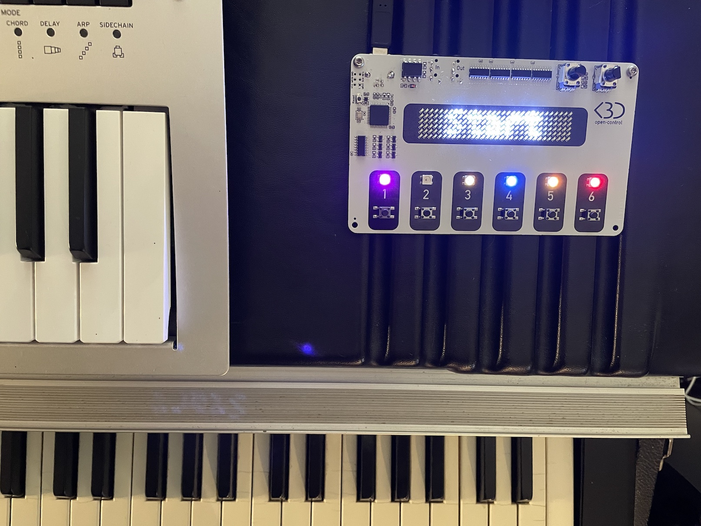
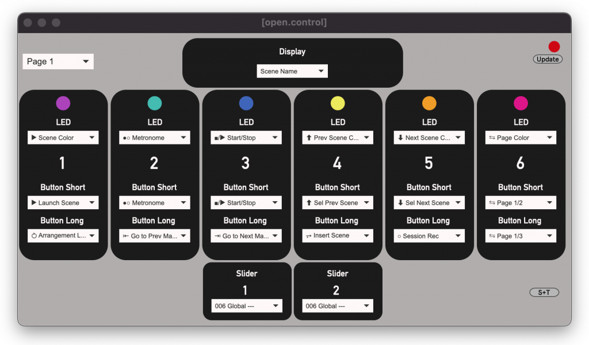

open·control is a Control Surface for Ableton Live that adapts to your needs.
It has a large and bright display, 6 buttons and 2 sliders that you can configure exactly the way you want.

1 controler, 3 flavors
open·control comes in 3 flavors:


Boxed
Use pedals instead of buttons
6 Jack inputs for Switch Pedals
2 Jack Inputs for Expression Pedals
MIDI In/Out
USB
Robust plastic enclosure

Maker
Create your own enclosure
6 Soldering Slots for Switches
2 Soldering Slots for variable Resistors
MIDI In/Out
USB
Includes Board + Components
Each version has the same set of features, simply choose how you want to control it.
Create your own layout
Each element of the controller can be changed instantly with an easy to use Web Editor.
You can create up to 3 pages of controls.

Available Actions
Scene Name · Track Name · Marker Name · Variation Number · Looper Number
Global Actions : Start/Stop · Metronome · Arrangement Rec · ⥁ Arrangement Loop · ○ Session Rec
Scene Actions : Selected Scene Color · Prev/Next Scene Color · Unable/Disable Follow Actions
Track Actions : Selected Track Color · Prev/Next Track Color · Clip Color · Mute · Solo · Arm
Looper Actions : Prev/Next Looper Track Color · Looper State · Looper Track Arm · Looper Track MuteGlobal Actions : Start/Stop · Metronome · Undo · Capture · BPM +1/-1 · Arr / Session View Toggle
Scene Actions : Launch Scene · Select Next/Prev Scene · Session Record · Insert Scene · Stop All Clips · Unable/Disable Follow Actions
Arrangement Actions : Arrangement Rec · Arrangement Loop · Go to Prev/Next Marker · Add/Delete Marker · Loop to Next Marker · Punch In / Punch Out · Jump to 1.1.1
Track Actions : Launch Clip · Find Empty Slot · Mute · Solo · Arm · Stop · Select Prev/Next Track · Add Audio/MIDI Track
Variations Actions : Launch, Store or Recall Variations · Randomize Macros · Select Prev/Next Variation · Select Prev/Next Device
Looper Actions : Rec/Play/OVR per Looper · Select Prev/Next Looper · Clear 1 · Clear All · Arm/Mute Looper Track · 6 MIDI-Mapable buttons per Looper
Global : Last Selected Parameter · Global Groove Amount
Selected Track : Send A · Send B · Selected Device Parameters 1 & 2 · Device 1 Parameters 1 & 2 · Looper Device 1 Parameters 1 & 2
open·control is Open Source, therefore the code can be adapted to fit specific needs.
3 MIDI modes
open·control has mini-jack MIDI In and Out ports, making it possible to connect it in 3 different ways.

Standard USB
Simply connect open·control to your computer using a standard USB cable.

Remote Control
For longer disctance, you can use the MIDI In and Out ports.
The power will be supllied by the USB port.

External MIDI
Use your own equipment to control open·control.
Just plug your gear to the MIDI In port, set the controls on the editor and your gear will trigger the corresponding buttons.
Any MIDI hardware that sends Notes or Control Changes can be used (for instance FCB1010, SPD-SX...).